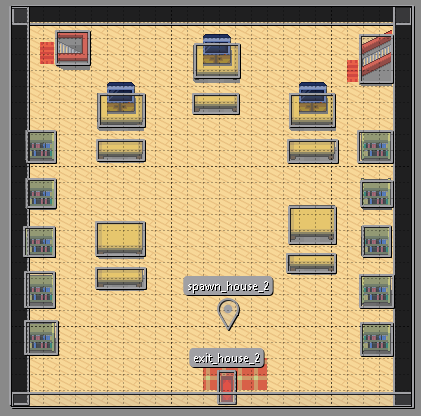

Projet Personnel
Sommaire
Présentation du Projet
Mon projet personnel consiste en la création d'un jeu vidéo 2D en Python utilisant la bibliothèque Pygame.
L'objectif principal de ce projet est de me perfectionner en Python dans le domaine de la programmation orientée objet tout en prenant du plaisir
à voir l'avancée d'un jeu que je code de zéro. En effet, dans mon cursus scolaire je n'ai pas pu approfondir le sujet de la programmation orientée objet
qui n'est pas forcément un sujet beaucoup traité en BUT SD (Science des données). J'ai commencé ce projet seul en fin de deuxième année de BUT.
Comme je suis le seul à avoir ce jeu, je n'ai pour l'instant pas créé d'environnement Python.
Avant de lancer le jeu, il est donc nécessaire d'installer certains packages. Ce jeu fonctionne pour l'instant avec seulement 6 touches:
- " Z, Q, S, D " permettent de se déplacer,
- " E " permet de lancer un dialogue avec un PNJ lorsque ce dernier est en contact avec le joueur,
- " A " permet de lancer le seul sort actuellement disponible.
Outils et Technologies Utilisés
Pour la réalisation de ce jeu vidéo 2D en Python, j'ai utilisé plusieurs outils et librairies. Tout d'abord, j'ai utilisé Tiled,
un éditeur de cartes open-source qui m'a permis de créer les différentes cartes du jeu à l'aide de tuiles et d'objets.
Tiled offre une interface facile d'utilisation pour construire des niveaux de jeu complexes avec des éléments interactifs.
Voici un exemple de map faite avec Tiled
Pygame
En ce qui concerne la programmation du jeu, j'ai utilisé la librairie Pygame,
qui est une bibliothèque très populaire pour le développement de jeux en Python. Pygame fournit des fonctionnalités pour la gestion des graphismes,
des sons, des entrées utilisateur, etc. Elle m'a permis de créer la fenêtre de jeu, de gérer les événements et d'animer les éléments du jeu.
Voici quelques exemples d'utilisation de pygame:
Création d'une fenêtre

Gestion d'événements
Chargement et transformation d'images
PyTMX et PyScroll
Pour la gestion des cartes Tiled dans le jeu, j'ai utilisé les librairies PyTMX et PyScroll.
PyTMX est une librairie Python qui permet de charger et de manipuler des cartes créées avec Tiled dans Pygame. Quant à PyScroll,
elle offre des fonctionnalités pour faire défiler les cartes et gérer les collisions avec les objets du décor.
Voici un exemple d'utilisation de PyScroll et PyTMX:
Gestion des collisions et chargement d'une map
Structure du Projet
Le projet est organisé de manière à séparer les différents composants du jeu et à faciliter la gestion du code. Voici une vue d'ensemble de l'architecture du projet :
- jeu_python/: Le dossier principal du projet.
- jeu_python/Scr/: Ce dossier contient les scripts Python principaux du jeu :
- game.py: Ce script gère la logique principale du jeu, y compris la boucle de jeu, la gestion des événements, l'affichage des graphismes, etc.
- player.py: Ce script définit la classe du joueur et gère ses actions et mouvements.
- projectile.py: Ce script contient la classe des projectiles et gère les sorts du joueur.
- monster.py: Ce script définit la classe des monstres et gère leur comportement, leurs mouvements et leurs collisions.
- map.py: Ce script gère la création et la gestion des cartes du jeu, ainsi que les collisions avec les objets du décor.
- dialog.py: Ce script contient les dialogues des PNJ (Personnages Non-Joueurs) et gère l'affichage des boîtes de dialogue.
- jeu_python/sprites/: Ce dossier contient les images des personnages et des monstres utilisés dans le jeu.
- jeu_python/sorts/: Ce dossier contient les images des sorts utilisés par le joueur.
- jeu_python/map/: Ce dossier contient les différentes cartes du jeu créées avec l'éditeur Tiled.
- jeu_python/dialogs/: Ce dossier contient les dialogues des PNJ utilisés dans le jeu.
Chaque script remplit un rôle spécifique dans le fonctionnement global du jeu. Par exemple, le script game.py est responsable de la boucle de jeu et de l'interaction avec le joueur, tandis que le script map.py gère la création et l'affichage des cartes du jeu. Cette organisation facilite la maintenance du code et permet une collaboration efficace si plusieurs personnes travaillent sur ce projet.
Architecture du projet
Fonctionnement de Tiled
Création de la map
Pour créer une carte dans Tiled, il y a différentes étapes :
- La création d'un nouveau projet : Il faut lancer Tiled et créer un nouveau projet en spécifiant la taille de la carte et des tuiles.
- L'ajout de tuiles : Les tuiles sont créées à partir d'images importées. Ces tuiles constituent un tileset, qui est une collection d'images utilisées pour construire la carte.
- Les couches : Les tuiles peuvent être placées dans des couches (layers). La couche placée en haut sera celle placée au premier plan, tandis que plus une couche est en bas, plus elle sera en arrière-plan.
- L'exportation de la carte : Pour utiliser la carte, il faut l'exporter dans un format compatible avec Pygame, ici le format compatible avec Pygame est TMX.
Visualisation des couches
Création de ses objets
Tiled permet également de placer des objets sur la carte. Ces objets peuvent être utilisés pour représenter des entités, des zones de déclenchement, des murs, etc.
Il existe différents types d'objets tels que :
- Les rectangles
- Les polygones
- Les points...
Les objets possèdent des caractéristiques :
- Un nom et un ID
- Un type (rectangle, point...)
- Une classe
- Des coordonnées
Ces différentes caractéristiques vont permettre d'utiliser ces objets dans Python. Par exemple, pour les murs, je crée des rectangles auxquels je donne la classe "collision". Ainsi, je peux les appeler par leur classe ou leur nom dans le script. Les coordonnées vont quant à elles permettre de placer l'objet.
Création des objets
Appel des objets
Description des cartes
Voici un aperçu des différentes cartes disponibles pour le projet :
Carte 1
Il s'agit de la carte la plus récente. Elle possède une taille de 1920*1088 contrairement aux cartes plus anciennes qui sont plus petites. Comme on le voit sur l'image, cette carte est composée de plusieurs objets malgré qu'il manque de nombreux rectangles de collision. Il y a les objets de type point qui permettent de téléporter les entités à un endroit choisi, des rectangles de collisions pour créer les murs et des rectangles avec des noms spécifiques pour délimiter les zones qui permettent de passer à la carte suivante.
Carte 2
Il s'agit d'une des premières cartes que j'ai créée. Elle suit le même principe que la carte 1 pour la déclaration et le fonctionnement des objets. Cette carte est destinée à disparaître pour laisser place à une map plus grande.
Carte 3
Elle suit le même principe des cartes précédentes pour la déclaration et le fonctionnement des objets. Cette carte est légèrement différente, elle restera petite car elle représente une maison, et j'ai voulu garder un style se rapprochant de Pokémon.
Futures Mises à Jour
Voici un aperçu des changements à venir dans les prochaines mises à jour du jeu :
- Ajout de rectangles de collision pour une interaction plus précise.
- Disparition du monstre lorsque sa vie est descend à 0.
- Conception d'une fenêtre d'accueil dédiée pour faciliter le lancement du jeu.
- Intégration de nouveaux sorts pour enrichir l'expérience de jeu.
- Introduction d'une barre de sorts pour une meilleure gestion des compétences.
- Création de divers types de monstres pour varier les rencontres.
Les mises à jour sont organisées dans l'ordre de priorité ; je débuterai par celle située en haut de la liste et conclurai par celle en bas.